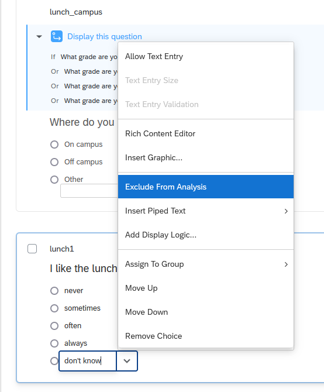

How to export analysis-ready survey data
By Crystal Lewis in tutorials
October 31, 2022
Have you ever downloaded your data from a survey platform and expected it to look like this? üòª
But instead you export data that looks like this? üôÄ

There are many issues with this data, ranging from unclear and inconsistent value entries, to vague variable names, to conflicting variable types, to multiple things being measured in one variable. While this data can still hopefully be salvaged, the time consuming, decision-heavy process that will go along with cleaning this data is an avoidable step in our data management process.
So how do we prevent this from happening? We build our data collection tools with our end result in mind. In this tutorial I am going to go through some tips to help you export data that is more interpretable and more usable. While building tools with your end in mind does require some up front time, planning and developing, it pays off in dividends.
Planning with the end in mind
So how do we plan with the end in mind? How do we know what our end data should look like? Our data dictionary! If you missed the post on data dictionaries, you can read about them here.
So let’s say we’ve created this data dictionary below, and it includes all of the items we plan to add to our survey instrument (as well as items we plan to calculate after we collect data). We can use this as our guide to build a survey that exports data exactly as we expect it to!
Disclaimer: Please ignore the poor quality of these survey items. They are only for demonstration purposes, not to show quality of actual survey questions. :)
Building surveys using the Qualtrics platform
Why the focus on Qualtrics? Well, it just happens to be the survey platform that I am most familiar with. This is definitely not an advertisement for using Qualtrics. I have no opinion on it as a tool other than it does have many helpful features and it meets many industry standard for privacy compliance. I, like probably some of you reading this, gained access to it because my former institution had a contract with Qualtrics and that is the tool that was used and trusted by my organization. As prolific as Qualtrics is though, it also happens to be known for having a fair share of pain points, and a lack of awareness of its quirks has led to many frustrations in the research community.
Have you truly used Qualtrics for data collection if one random item isn't coded from 13-19 instead of 1-7? üôÉ
— Dr. Tessa Benson-Greenwald (@GreenwaldTessa) January 17, 2022
I am hoping some of the tips in this post will help you avoid some of these Qualtrics frustrations. With that said, I believe all platforms have their own quirks and I think many of the tips listed below can generally be applied to other data collection platforms as well.
Disclaimer: The tips below are just that, tips. This is not a comprehensive manual for building a survey. It’s just a collection of lessons I’ve learned over the years after building surveys and exporting bad data. This is my attempt to give you some ideas to help you export more reliable and quality data from your survey platform.
Tip #1: Use your data dictionary to rename all variables
In Qualtrics, variable names are assigned based on the order in which a variable is created, starting with Q1. Not only does exporting variable names like Q1, Q5, etc. require the extra step of renaming variables after export, it also leads to errors. I have been in several situations where a cleaning syntax is written for a survey, but then at some point the survey items are reordered or a question is added or deleted and Q7 no longer aligns with what we think it does in the syntax.
The solution here is to name all of your variables according to your data dictionary. You can rename variables by simply clicking into the variable name space and renaming the item. While this is a manual process in Qualtrics, it saves you such much time and energy in the long run.
One other piece of advice: If you are collecting data longitudinally, you may be tempted to add time to variable names (ex: age_t1, age_t2). My advice to you is don’t. Name variables consistently over time. If you plan to make copies of your survey over time, for different waves of data collection, your process is reproducible if your variable names stay consistent over time. You simply copy the survey and resend as needed. However, if your variable names change each wave, you will need to edit your survey variable names each wave. Not fun. You can always add time to your variable names programatically after you download your data.
Tip #2: Use your data dictionary to recode all variables
Similar to item names, Qualtrics automatically assigns numeric value codes to response options of categorical variables based on the order that options are provided. You can think of this in a yes/no question where you provide the option yes first and Qualtrics assigns it a 1 behind the scenes, and then you provide the option no and Qualtrics assigns it a 2. But similar to the problems above, these may not be the numeric values you want associated with your text labels, requiring additional data cleaning after export. What’s worse, reordering or replacing response options may lead to odd values that you were not expecting. In Qualtrics you can recode values by going to “Recode values” and checking the “Recode Values” box to change your values from icky coding like 1,2,5,7 to 1,2,3,4 as denoted in your data dictionary.
Note: If you add new questions or choice options at any point, check the back end coding again before exporting.
Tip #3: Use your data dictionary to add content validation to variables
This step is crucial to ensuring you collect valid data for open-ended response questions. For example, if your variable type is numeric according to your data dictionary, you do not want to allow text entry. If your allowable variable range is only 10-20, you do not want to allow values outside of that range. If you do not add this validation to your data collection tool, you run the risk of potentially collecting unusable data or at best, messy data that requires lots of additional data cleaning. You can add validation in Qualtrics by selecting “Add validation” and then selecting the type of validation you want, for instance “Content type”. From there you can add more information, such as “Content type” is “Number” and set a minimum and maximum range for the question.
This content validation does not only apply to numeric questions though. Another example may be only allowing a date input and setting the format for those dates to a format of your choosing. If someone does not enter the date using the assigned format, they will receive the following message Please enter a valid international date of the form: yyyy/mm/dd.
Tip #4: Use controlled vocabularies when possible
As we saw in the beginning of this post, open-text boxes are often riddled with typos, misspellings, unclear responses, and misinterpretations. There are times when you really do need to use a text box to collect data. You may need to use an open response box in order to be inclusive of all response options or you may need to use one because there really is an undetermined number of response options. But if you have a manageable, finite number of response options to choose from, use a multiple choice list or drop-down menu to prevent you from having to clean up a messy text variable.
If you have many response options, one nice feature of Qualtrics is that you can drag and drop a list of options into Qualtrics, removing the step of having to manually type each option. After the response options are added you can then go in and recode the response option values.
Tip #5: Choose the right type and format for the question
This may sound like a no brainer, but it’s not always clear which question type should be used for your question. It is important to become familiar with the various question types available to you and test out what works best. For instance if you were unaware that “Rank order” was an actual question type available to you, you might be tempted to create a multiple line text entry form where participants freely enter their ranking order of your items. However, without carefully constructing this kind of question, you may miss the fact that a free form may allow duplicate entries (such as selecting a rank of 1 more than once).
However, if for example you choose the “Rank order” type and select the “Drag and drop” format, you will no longer run the risk of people selecting duplicate options as they are only allowed to drag the 3 existing response options and order them.
But wait! You still have to pay attention to your options. If you select the “Rank order” type and instead select the “Text box” format, users are still allowed to enter duplicate response options, unless you go one step further and select “Add validation” and “Must rank all”. Then if a user tries to select “1” for both “Pepperoni” and “Cheese”, they will receive this error message, Please assign a value from 1 to 3 for each item. Values may not be repeated.
The takeaway here is to study your question types and formats and choose whichever provides you the most accurate and reliable response data.
Tip #6: Don’t collect names as unique identifiers
Oftentimes in survey research, unless we are collecting anonymous data, we need unique identifiers in our survey to be able to link data across time or across forms. You may be tempted to collect names in order to link data, but there are many problems with using names:
- Names aren’t unique
- Most studies require confidentiality so you will need to end up replacing names with a numeric or alphanumeric study ID before releasing data
- Free form text fields lead to inconsistent values making linking difficult
An example of entries that might be troublesome to link:
| Spelling of names in pre-test | Spelling of names in post-test |
|---|---|
| Frieda A. Maeda | Frieda Maeda |
| violet Mcgonical | Violet McGonical |
| Chris Lucass | Christopher Lucas |
| Oriana Koyla | Oriana Koyla-Ross |
My recommendation here is, if you are running a study where you already have an existing list of participants in your study, pre-load that list into your survey and use it to collect data. Using your embedded participant list you can do things like send unique links to participants, removing the need to have participants enter their own information. To prevent errors, upon opening each unique link, a prompt can be triggered asking participants to verify their identity (based on the embedded data you have added - such as name). Even better, if you already have both name and unique ID assigned, embed all of that information, removing the need to merge in study ID after export.
To learn more about embedding data in Qualtrics, such as names and IDs from a contact list, you can visit Qualtrics Help.
Tip #7: Check your survey by exporting the instrument
Export your survey instrument to a human-readable document. Exporting your survey this way allows you to more easily check things such as:
- Are all questions accounted for?
- Are all response options accounted for and coded as expected?
- Is display logic doing what you expect?
You can export a copy of your survey in Qualtrics by going to “Tools” -> “Import/Export” -> “Export Survey to Word”. This Word document will show you the variable names, the back-end value coding of response options, as well as any display logic associated with your survey.
Tip #8: Collect sample responses
Before you send out your survey to the world, make sure to collect sample data first. Send it to people on your team and provide them with a specific list of things to test and look for, similar to those we mentioned above. For example:
- Can everyone access the survey?
- Are all questions accounted for in the survey (according to the data dictionary)?
- Are all response options visible for each categorical question (according to the data dictionary)?
- Is your data validation working or are people allowed to enter unallowable values?
- Does skip/display logic follow the rules assigned in the data dictionary?
- Are there any poorly worded questions?
- Are there any unclear response options?
Once you gather feedback from all users, integrate that feedback into the survey.
Tip #9: Choose a file type for exporting your data
You may think that choosing a file type to export to is a decision that can be made after your data is collected, and generally it is. But it is important to know that each file exports a little differently and has different export options. One example of this is understanding how “select all” questions export differently across different file types. Or understanding how value choices will be displayed. Just for demonstration purposes, I will compare a few differences between exporting to an SPSS file versus a csv file.
Example 1: Choosing to export to an SPSS file
- Multi-value fields (like my “select-all” and “rank choice” questions) will be exported as unique items, with each item being coded as “1” if the item was selected and blank if not selected.
- My response options will all be exported as numeric values (with the value labels displayed on the Variable View tab)

Example 2: Choosing to export to a csv file
- Here the default is again to export “select-all” and “rank choice” questions to unique items, however, we now have the option to unselect the check box “Split multi-value fields into columns” and allow all of our response options for “select-all” to be displayed in one variable, with each value separated by a comma. NOTE: While this is an allowable option, be aware that a variable in this format will not be analyzable unless you do further transformations in your data cleaning process.
- Again, the default for this format is to export my response options as numeric, but I also now have the option (not provided in the SPSS format), to export choice text instead of numeric response options.
- This file type also exports these additional rows of metadata (notice the 2 additional rows of information below the variable names). I will need to account for this in my data cleaning process.
Choosing your export file type ahead of time allows you to plan for future data cleaning (for example recoding blanks to 0 in your “select all” and “rank choice” questions) as well as make any needed edits for your data dictionary (for example displaying your “select all” question as 4 separate items with yes/no response options, rather than one item as it is displayed as right now).
Tip #10: Check your data by exporting your sample responses
I cannot emphasize enough, how important it is that you export sample data from your instrument before you ever send your survey out for actual data collection. It is so important you check that your data is exporting in the way you expect it to.
Things to check are:
- Are there any unexpected variables?
- Are there any unexpected variable names?
- Are there any unexpected values?
- Are any values missing where you expected data?
- Are there any unexpected variable formats?
- Is data exporting in an analyzable, rectangular format? Is there anything that violates the rules of basic data structure. You can read more about data structure rules here.
You can export your sample data in any way that you usually export your data. Probably the most common way is by going to “Data & Analysis” -> “Export & Import” -> “Export Data” -> And then choose your file type.
In our sample data below, I exported to a csv file. I notice a few things. First I see that Qualtrics exported some additional metadata that I was not expecting (ex: RecordedDate, ResponseId) and I will need to account for that in my cleaning process and data dictionary. Second, I see that a -15 was allowed to be added in my age variable which means something is wrong with my content validation for this item (which should only allow the range of 10-20). I will want to fix this before I send my survey out for data collection.
Tip #11: Be aware of Qualtrics quirks
Qualtrics has many quirks, features that are not necessarily bad but they just aren’t intuitive. My guess is that many of you reading this may have experience quirks of your own. And if you are unaware of these features, it can lead to serious errors in your data. Just a few of the quirks I have come across and want to share with you are:
1. Make sure to publish all changes. Any time you make a change to your survey, those changes will not appear in your public facing survey unless you select “Publish” (the big BLUE button in the top-right corner of your survey page).
2. If one of your item response options is ‚Äúdon‚Äôt know‚Äù or ‚Äúunsure‚Äù, Qualtrics automatically recognizes those as special response options and places a warning sign next to it. üö´
If you don‚Äôt pay close attention (which has happened to me before), you will not notice the warning sign and you will not hover over it to read that Qualtrics has chosen to exclude those response options (meaning that when a user selects ‚Äúdon‚Äôt know‚Äù, instead of that value being coded to 5, as I have assigned, it will be recoded to missing in my data export).üôÄ
If this is not the behavior you want, and you prefer those response to appear in your data as the value you have assigned (in this case a 5), you can click into the response option and uncheck the option “Exclude from analysis”.
I am sure there are MANY more quirks to be known about Qualtrics (or other survey platforms) and if you have any you would like to share with others, please feel free to comment at the bottom of this blog post!
Wrapping it up
I hope some or all of the tips above can help you build your survey instruments, or at least get you started in thinking about the many steps that go into creating a survey that exports analysis-ready data.
I recognize that each survey is different, each project is different, and each user’s needs are different. But ultimately what I want to emphasize here is, take the time to thoughtfully plan and test your survey before you collect data so that you end up with usable and reliable data. If changes are made to your survey at any point after data collection has started, make sure to account for and track those changes in your data dictionary.
Last, J-Pal has put together a very thorough document on survey design if you would like to learn more. This resource also includes a survey platform comparison table (Table1) that can be helpful in deciding which platform best meets your projects needs.